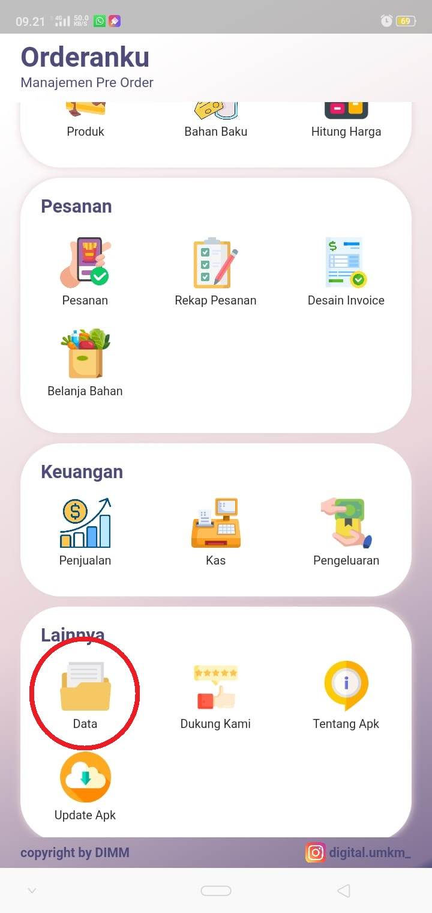
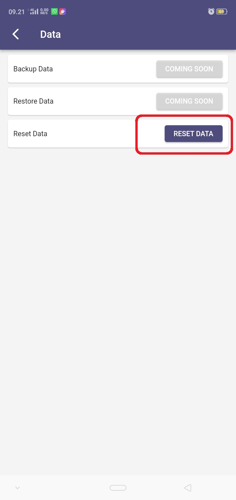
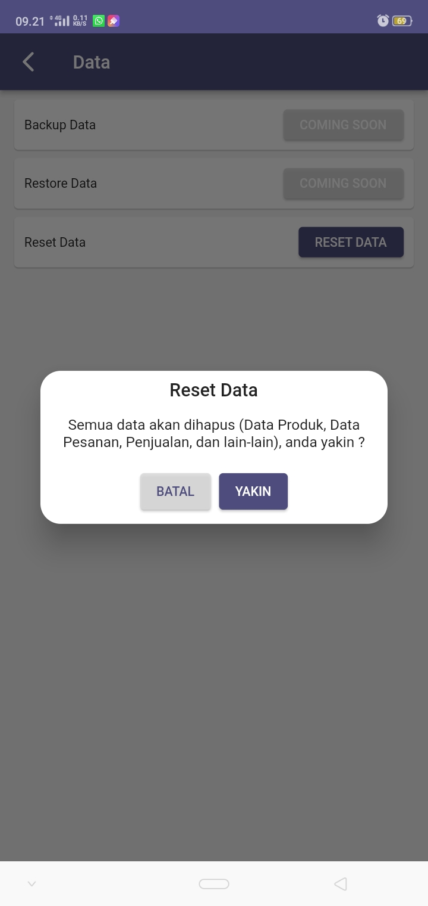

Jika kamu ingin menghapus data pada aplikasi Orderanku, silakan ikuti tutorial berikut.
Data yang dihapus adalah semua data yang sudah anda input pada aplikasi, yaitu data produk, data pesanan, data invoice, data penjualan, dan lain-lain
Perlu anda perhatikan bahwa data yang sudah anda hapus tidak bisa dikembalikan


